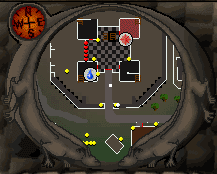
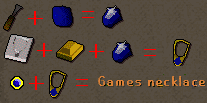
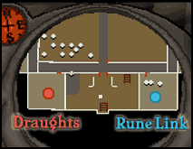
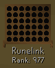
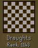
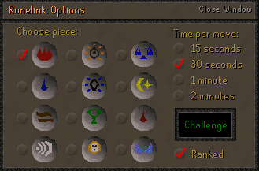
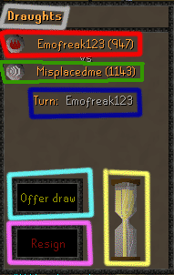
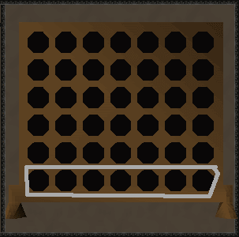
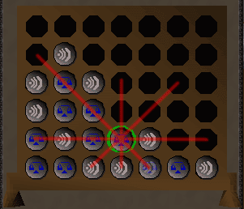
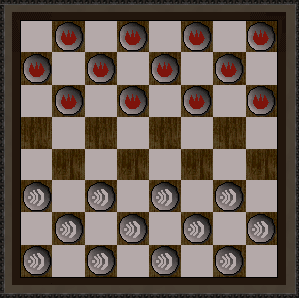

Burthorpe Games Room
Intro
The Games Room in RuneScape is a place where you can challenge other players to enjoyable board games while enjoying the tastes of Asgarnian Ale, Dwarven Stouts and Wizard's Mind Bombs (aka Beers). You've been beating your friends head in for the last 30 minutes. You've been beaten in the face for just as long. Apparently, this isn't the best way for you and your friend to decide if you should have pizza or hamburgers for lunch. Is there no other way to decide? Now, you can decide in this games room? No need for violence, use your brain. Challenge your friend to a game in the game room, and show him that pizza is the best choice for lunch.
How to get there
The Games room is located in the basement of Burthorpe Castle. Burthorpe is located north of Taverley and the Hero's guild. How do you get there you ask? Good question. There are two primary ways to get to the castle.

Walking from Falador or Camelot:
- From the center of Falador, follow the North road out of the city, through Taverley. Continue to follow the road until you come to a branch in the road. Take the North path. Soon, you will reach Burthope. Wander around until you find the castle, and go down both flights of stairs.
- Alternatively, from Camelot, go under White Wolf Mountain to the other side. Head east, and follow the road that goes North.
- Pro: No money wasted on runes or items.
- Con: Time consuming as you have to walk.
Game room teleport
- This is the fastest way to get to the game room. Click it, and you are instantly in the entrance hall. You'll need a minimum of level 7 magic and level 10 crafting to do this. Game necklaces only have 8 charges, and will melt when the last charge is used.
- Pro: Fastest method by far.
- Con: Requires the time to get the supplies and make the amulet.

Sapphire: 300 gp. Gold bar: 400 gp.
Realizing you dont have to spend 10 mins walking to the castle: Priceless.
You're there now - below is a map of where you will be. Now what? Sit down and grab a drink from Sam the bartender next to you, and I'll teach you how to totally "0wn" the other players. As you enter either of the challenge rooms (RuneLink on the right and Draughts on the left), you will notice one of two things. The first will be the game board at the top corner of your screen. The next will be a lot of 3 digit or 4 digit numbers where everyone's combat normally is. Odd eh. How did everyone level up so quickly? Nah, you see their rank for that game. Unless specified, a game will affect your ranking when you win or lose. You begin with 1000 rank points at the beginning. The better players have ranks way higher then that, and the not so good players will have ranks that are lower. Begin by challenging people that are close to your rank.

| Picture | Information |
|---|---|
|
 |
This is what you see when you enter the rune link room. It is a miniature version of the game board. The idea behind the game is to connect four of your pieces in a row before your opponent does. |
|
 |
This is a mini checkerboard. This is what you see when you enter the Draughts room. The idea of this game is to get rid of your opponents pieces before they get rid of yours. |
Challenging others
As you enter either of the challenge rooms, you will notice one of two things. The first may be the game board at the top corner of your screen. The next will be a lot of 3 digit or 4 digit numbers where everyone's combat normally is. Of course, this is their rank. You will also notice you have a ranking below the game board at the top of the screen. If you see someone close to your rank, right click them and challenge them. You will be evenly matched in skills. You will be given an options menu.

- First, pick your game piece. Your choice will not affect you in any way during the game. Just pick your favourite rune.
- Next, choose the time limit per move. This actually requires some previous thought. Are you wanting to do a quick game, or are you wanting a long game where you can have a hard challenge? If you reach the time limit on one of your moves, the game will automatically choose a piece for you, and it isn't always the best move.
- The last thing you need to do is decide if you want to risk your ranking in this match. For the most part, I recommend always leaving it checked. There is always that chance you can win. Besides, if you lose, it isn't too hard to gain back points.
When you start any games, this panel of information can be seen on the left. It is explained below.

- Red: Your opponents game piece, name, and ranking. Your opponant will always be in this area.
- Green: Your game piece, name, and ranking. You will always be in this area.
- Dark Blue: Who's turn it currently is.
- Light blue: Offer a draw. If you are losing you can click this and hope your opponent agrees. If they do, you don't lose your rating. However, they MUST agree to it, and that rarely happens. If you are playing draughts and you click the resign button, it will automaticly resign if fourty(40) moves have passed with nothing happening.
- Purple/pink: Resign. It automatically ends the game and sets you as loser. You will lose points as if you had lost the game.
- Yellow: Current timer. If you run out of sand in the timer, the game automatically makes a move for you, and it isn't always the best.
- Gray: The name of the game you are playing. It will be either runelink or draughts.
Runelink
Runelink is the game that is played most often in the game room. Why? Because it is easy and you can finish a game in a very short time. All right, have you knocked back Sam's beers? Good. Maybe I'll have a chance against ya eh. Head towards the Runelink challenge room as shown in the map earlier. After you both accept the settings, you will be teleported into the gaming area and your game begins.

That is a Runelink board that has not been used yet. The grey circle indicates where your game piece will fall when you click. If a peice already occupies that space you click, it will stack on top of that piece. You continue switching turns untill you or your opponant has four pieces in a row. Simple, yes?
Runelink Tips
Although there are few things that can be told to help you play well, a few tips never hurt.

- Look in all directions after your opponent moves.
- You will notice that the next law move can win the game by putting a piece in the top left hand spot. Block it before they can put it there.
- Play people close to your ranking. Again, the ranking shows their skill. It wouldn't be fun to be beaten with no hope, or to beat someone who has no idea what they are doing.
- Try distracting you opponent. It may keep them from noticing another move.
- Never play when tired. If your tired, your brain will not function as well. That means you will miss moves that can be taken.
Draughts
Want a game that will take a bit of time and thought? Draughts might be the game for you. This is basicly a game of checkers. Go to the Draughts challenge room on the West side as shown in the map earlier. Once there, right click and choose an opponant. You will be teleported to the game room, and your game begins.

The above is the opening board for draughts. Each person begins with twelve pieces, and your goal is to capture all of your opponants pieces before they take yours.
Checkers is a game of strategy. It has only 4 rules, and all must be used to force your opponant to do what you want them to.
- Rule 1: You can only move diagonally on the darker squares.
- Rule 2: You must always take a jump.
- Rule 3: A normal piece can only move forwords. It cannot move back.
- Rule 4: A " kinged" piece can move forwords and backwords. They are often the deciding pieces in the end of the game.
A normal move (one that does not capture a game piece) is only one square. A capture jumps the piece in front of your piece, and lands in the square after it. If there is another jump to take, you can continue taking jumps. Once you reach the end of the board, and end up at the beginning side of your opponant, the piece that made it there will be "kinged" or "crowned". This piece turns red and now can travel in any direction as long as it is a legal move.
Draughts tips/strategies
Draughts is a fairly simple game, but every move can open new possibilities. A few tips never hurt.
- Tip 1: Be willing to lose pieces. Sometimes the one piece you lose could help you get two or more of their pieces.
- Tip 2: Although not necessary, try to keep your home row filled. That way, it becomes harder for your opponant to get kinged.
- Tip 3: If your pieces are "hugging" the side of the board, they lose half their power. Try to concentrate your pieces to the center area.
- Tip 4: Try to plan multiple moves while waiting for your opponant so you dont stumble when they take your move.
Best of luck to you and happy gaming!